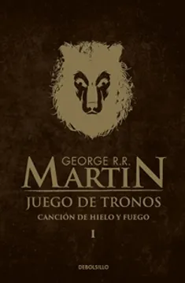

Formato: Libro físico
Autor: George R.R.Martín
Editorial: Debolsillo
Categoría: Literatura
Año: 2012
Idioma: Castellano
N°páginas: 798
Encuadernación: De bolsillo
Precio de venta: $8.400
DESCRIPCIÓN
Tras el largo verano, el invierno se acerca a los Siete Reinos. Lord Eddars Stark, señor de Invernalia, deja sus dominios para unirse a la corte del rey Robert Baratheon el Usurpador, hombre díscolo y otrora guerrero audaz cuyas mayores aficiones son comer, beber y engendrar bastardos. Eddard Stark desempeñará el cargo de Mano del Rey e intentará desentrañar una maraña de intrigas que pondrá en peligro su vida... y la de los suyos. En un mundo cuyas estaciones duran décadas y en el que retazos de una magia inmemorial y olvidada surgen en los rincones más sombrios y maravillosos, la traición y la lealtad, la compasión y la sed de venganza, el amor y el poder hacen del juego de tronos una poderosa trampa que atrapa en sus fauces a los personajes... y al lector.